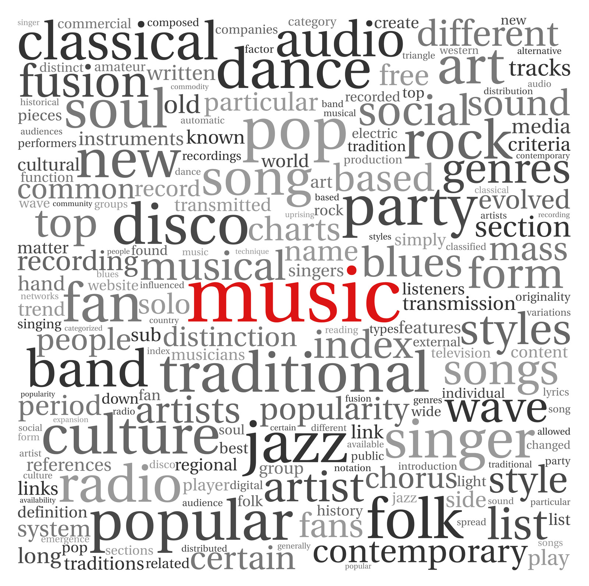

Our Purpose
Learn about our purpose and future goals in providing globally inclusive musical artist recommendations and why it's needed here!
Our Purpose
- Our purpose in this project is to provide a platform that allows underrepresented musical artists from around the world to be seen while simultaneously allowing users to explore and discover new music that still fits within their musical palette.
- In order to achieve this purpose, we built a music recommender app based upon machine learning methods that mitigates regional bias allowing for global representation while also prioritizing user satisfaction.
- Overall, our hope is to start creating a more fair and equitable music industry promoting cultural diversity.

Why It's Needed
- Our project is significant in contributing to the current climate of the music industry because many artists outside of the US/UK feel the need to bend to the current status quo of western music styles to achieve the same level of commercial success as western artists.
- For instance, according to Hon Ki Cheung who recieved their Ph.D. in music from the University of Minnesota, many current college music classes focus on teaching western music styles promoting future artists to believe that they have to conform to western styles for future success (Cheung, 2020).
- Furthermore, there are no current projects that aim to mitigate regional bias in music recommender systems so it is much needed!
- Source: Cheung, Hon Ki. “Out of Context #2: Modern Development of Non-Western Music.” I CARE IF YOU LISTEN, March 15, 2020. https://icareifyoulisten.com/2020/02/out-of-context-2-modern-development-non-western-music/.

Our Future Goals
- In the future, we hope to continue to mitigate bias in the music industry by building a music recommender system that mitigates bias along multiple lines such as gender and genre in addition to regional.
- Additionally, we hope to continue refining our recommender system model to achieve greater user satisfaction by incorporating audio and lyrical features.
- Lastly, we hope to continue refining our webapp to include more features that would give users more control over their musical experience such as allowing users to specify the mood of the music they want to litsen to.